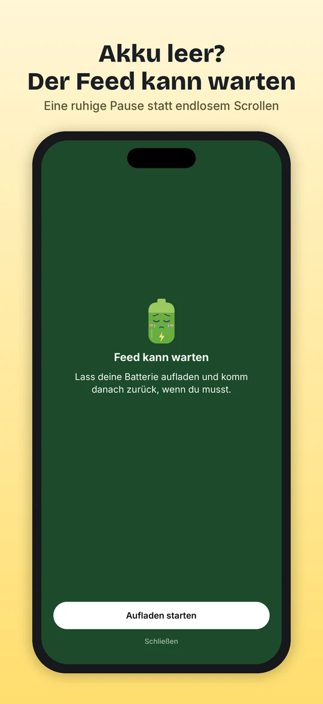

Handysucht und Social-Media-Sucht: was wirklich hilft
Du greifst ohne nachzudenken zum Handy, verlierst ganze Abende im Feed oder wirst unruhig, wenn es nicht in der Nähe ist? Das ist keine Charakterschwäche – viele Apps sind darauf ausgelegt, dich möglichst lange zu halten. Die gute Nachricht: Kleine Änderungen im Alltag helfen oft mehr als ein schlechtes Gewissen.
Typische Anzeichen
- Das Handy ist das Erste am Morgen und das Letzte am Abend.
- Aus „nur kurz“ wird regelmäßig eine Stunde.
- Du hast schon versucht, weniger zu scrollen, und bist schnell wieder im alten Muster gelandet.
Was hilft
- Beobachte, wann und wo du am meisten scrollst.
- Bau Hürden ein: Verlockende Apps runter vom Homescreen, unnötige Mitteilungen aus.
- Gib den Apps, die dich reinziehen, ein festes Budget, statt auf Willenskraft zu setzen.
- Füll die Lücke mit etwas, das dir offline Freude macht.
- Sprich mit jemandem. Leiden Schlaf, Arbeit oder Beziehungen, können Ärztinnen, Ärzte oder Therapeuten helfen.
Wie ScrollVolt dich unterstützt
ScrollVolt gibt den Apps deiner Wahl einen gemeinsamen Scroll-Akku. Er leert sich bei Nutzung und lädt sich über den Tag von selbst wieder auf: eine klare Grenze, aber kein Totalverbot. Zum Freischalten ziehst du den Akku auf die Minuten, die du willst, und bei null erscheint statt der App ein ruhiger Sperrbildschirm. Volty, dein kleiner Akku-Buddy, sorgt dafür, dass das Ganze ein freundlicher Schubs bleibt und kein erhobener Zeigefinger.


Häufige Fragen
Ist ScrollVolt eine Therapie gegen Handysucht?
Nein. ScrollVolt ist ein Werkzeug zur Selbsthilfe, das Grenzen leichter einhaltbar macht. Wenn dir deine Handynutzung entgleitet, hol dir bitte professionelle Hilfe.
Muss ich Social Media ganz aufgeben?
Nein. Du entscheidest, welche Apps einen Akku bekommen und wie viele Minuten du freischaltest.
Was passiert mit meinen Daten?
Sie bleiben auf deinem iPhone. ScrollVolt nutzt Apples Bildschirmzeit-Frameworks und kommt ohne Konto, Tracking und Werbung aus.
ScrollVolt auf dem iPhone testen
ScrollVolt Premium ist ein Jahresabo mit 3 Tagen kostenloser Testphase, das du jederzeit in den Einstellungen deines Apple Accounts kündigen kannst. Lieber einmal zahlen? Dann gibt es die einmalige Lebenslang-Option.
Laden imApp Store